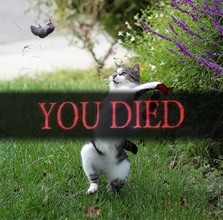
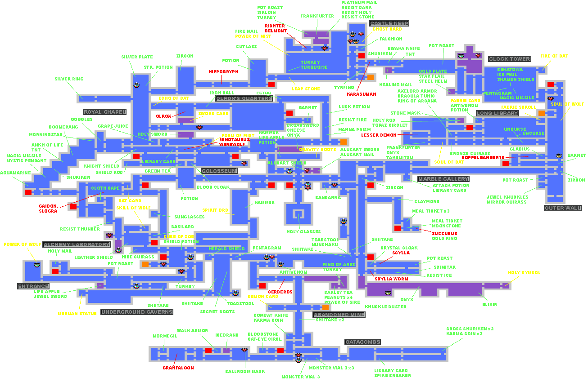
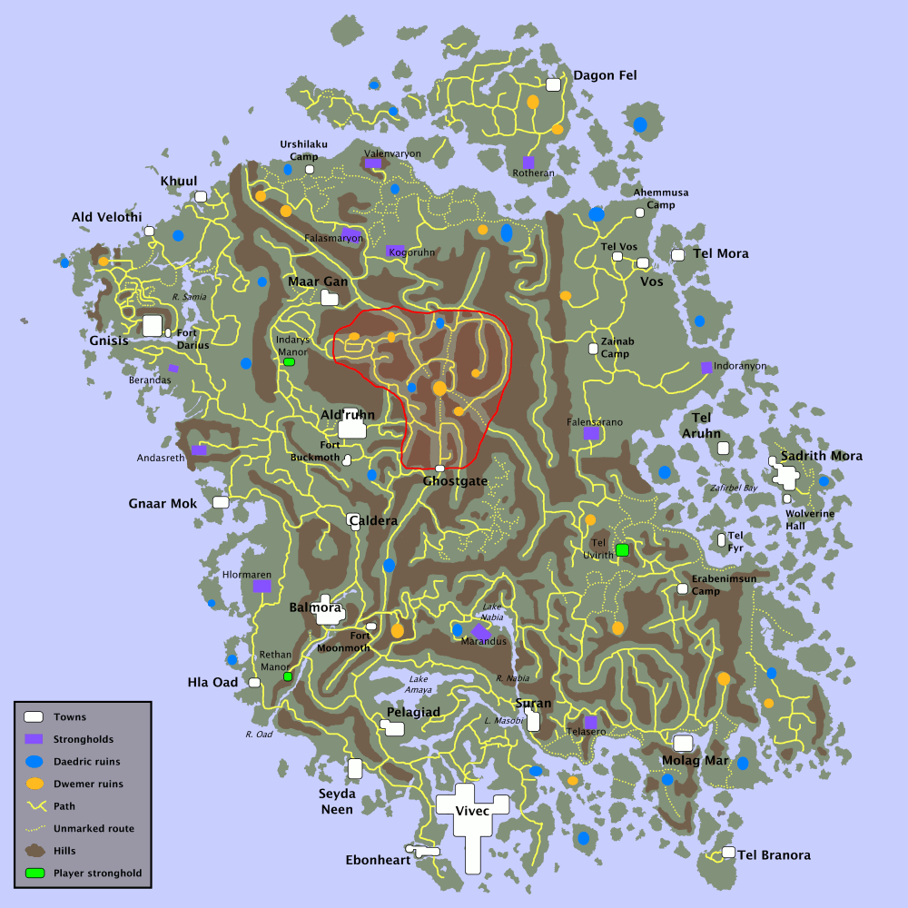
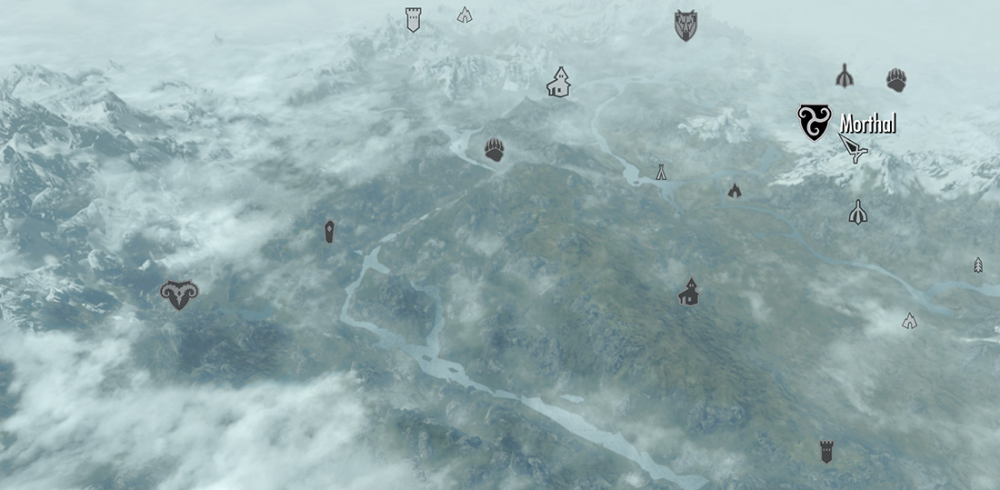

Game Design & Dark Souls
Dans mon article de juin dernier sur le game design des MOBA, j'ai déclaré ne plus prendre beaucoup de temps pour jouer à des jeux vidéo ; il y a effectivement une quantité assez sidérante de jeux pas déballés ou pas essayés sur mes étagères. Mais je me soigne : au fil des derniers mois, j'ai redécouvert par petites doses les mille et un plaisirs du rôle de joueur et je suis venu à bout de pas mal de jeux que j'avais l'intention de faire. Il m'en reste des wagons mais je progresse. Ouf.
Dark Souls est un jeu développé par From Software, sorti en 2011 sur XBox 360 et PS3. Si on voulait enfermer le jeu dans des boîtes, on dirait que c'est un RPG d'aventure à la troisième personne en temps réel. Essayez d'imaginer un jeu à mi-chemin entre The Witcher et Shadow of the Colossus et le résultat ne sera pas trop loin de l'idée générale, sauf si vous êtes en train d'imaginer « un type avec les cheveux blancs dans un jeu où il faut draguer des monstres géants ».
Je ne sais plus exactement pourquoi j'ai acheté ce jeu, il me semble que les deux principales raisons étaient que les gens en parlaient beaucoup sur le forum de TIGSource et aussi la vue de ce trailer curieux :
A vrai dire, le jeu démarrait assez mal de mon point de vue. D'abord, il y avait des dragons dans l'introduction, ce qui est très souvent signe de mauvais goût et de clichés tolkienesques. Ensuite, on commence en prison comme dans un Elder Scrolls (une série que je ne porte pas franchement dans mon cœur), autant vous dire que j'étais plein d'appréhension et pas vraiment vendu d'avance.
Inutile de vous le cacher plus longtemps, si j'écris cet article, c'est bien parce que mes mauvais pressentiments on très vite été dissipés. Voilà, j'avoue tout : je pense que Dark Souls est un des jeux les plus remarquables de ces dernières années. Heureusement pour moi, je ne suis pas critique de jeu vidéo : je ne vous parlerai donc pas des graphismes sublimes, de la bande son insaisissable ou encore du design exceptionnel de ce jeu (oups, trop tard). Le propos de cet article est d'analyser quelques unes des mécaniques de jeu qui font de Dark Souls un jeu si réussi. Je n'ai donc aucune prétention d'objectivité puisque je choisis de me focaliser sur « ce qui fonctionne bien » dans le jeu.
Dark Souls et la difficulté
Dark Souls est le successeur de Demon's Souls, lui même précédé par toute une flopée de jeux King's Field développés par From Software. Le point commun de tous ces jeux, c'est qu'ils ont la réputation d'être extrêmement difficiles (et je peux attester de la véracité de ces propos en ce qui concerne King's Field II). Cette réputation a été le fondement de la campagne marketing autour de Dark Souls dont le slogan était Prepare to Die et qui montrait un montage de plein de façons horribles de mourir dans le jeu. Ambiance.
Beaucoup de joueurs considèrent Dark Souls comme un jeu à la difficulté insurmontable comme on en avait dans les années 80 (que tous ceux qui ont fini Wizardry lèvent la main !). Seulement, quand on y réfléchit, on s'aperçoit que c'est très très faux et que Dark Souls se contente d'être un tout petit peu en décalage avec les poncifs du game design des années 2000 et plus. Explication :
Dans Dark Souls, le joueur peut mourir en deux ou trois coups de n'importe quel monstre. Dans un jeu moderne comme God of War ou Bayonetta, mon personnage peut encaisser des effondrements de bâtiments et des éclairs magiques par paquets de cinq avant de succomber. Je pense que les joueurs qui se plaignent que Dark Souls est un jeu trop difficile sont ceux qui tente d'y jouer comme ils jouent à God of War et Bayonetta. Dans ces deux jeux, lorsque l'on combat des ennemis on adopte une posture offensive qui consiste à déployer ses combos les plus puissants et à faire un joli combat chorégraphié que, parfois, on choisit d'interrompre par une esquive ou une parade afin d'éviter un coup porté par un adversaire. Ces mêmes adversaires sont extrêmement lents à lancer leurs attaques (elles sont « téléphonées », une longue animation vous laisse le temps d'anticiper le coup pour l'esquiver) et cet avantage est suffisant pour que la défense fasse figure d'« exception » dans la chorégraphie du joueur.
A l'inverse dans Dark Souls, si vous foncez tête baissée dans un affrontement, vous avez de bonnes chances de vous faire tuer en deux secondes. Pour réussir, il faut changer d'attitude (ce qui est très inhabituel et à contre-courant des jeux modernes) et être défensif par défaut plutôt qu'offensif. Dans Dark Souls les monstres ne sont pas beaucoup plus lents que vous (en général, vos attaques à vous sont téléphonées aussi) et tel un monstre sournois caché dans un angle mort de caméra de Bayonetta, vous devez attendre une occasion de placer un enchaînement sans risquer de prendre un coup de Jarnac qui viendrait ruiner votre barre de vie. Il en résulte que les chorégraphies de combats de Dark Souls tiennent plus, et ce dès les premières heures de jeu, de la gavotte que du pole dance. Attaques, parades, feintes, esquives — tout s'enchaîne avec un réalisme saisissant (les animations sont très bonnes) et le jeu aurait pu être sous-titré The Real Medieval Combat Simulator. Metal Gear Solid 3: Snake Eater est un autre exemple de jeu moderne où le système de jeu punit sévèrement les joueurs trop pressés et inattentifs à leur environnement. Ce choix de game design apporte une dimension tactique aux combats sans pour autant sacrifier leur dynamisme, mais a l'inconvénient de dresser une barrière d'entrée qui écarte beaucoup de joueurs incapables de se défaire de leurs habitudes et d'aborder les situations avec sang-froid.
Heureusement dans Dark Souls, les développeurs ont pensé à tout et même aux gens pas très doués comme moi. J'étais plutôt mauvais à Dark Souls, non pas parce que j'étais pressé mais parce que je manque souvent d'adresse dans les jeux (lève la main si toi aussi tu n'arrives pas à faire les esquives dans Alan Wake et les QTE — argh — dans Castlevania: Lords of Shadows). Du coup je suis mort très souvent et j'ai pu apprécier dans toute sa finesse la mécanique de la mort dans Dark Souls.

Quand je meurs dans un jeu classique, la continuité du jeu est brisée. L'état du jeu (position du personnage, inventaire, etc.) est ramené à un état antérieur (éventuellement avec une pénalité sur ma progression macroscopique : expérience, or ou une autre ressource non critique pour mon succès à court terme) et on me donne une seconde chance pour refaire correctement la séquence que j'ai ratée. Si je multiplie les échecs, cela devient vite frustrant et ça finit souvent sur GameFAQs en quête d'un monde plus juste.
Dans Dark Souls, le personnage du joueur est maudit et porte une marque sombre qui fait de lui un non-mort qui renait éternellement à l'étincelle de lumière (lire checkpoint) la plus proche. La conséquence immédiate de cette décision est que lorsque je meurs, le flux du temps n'est pas brisé pour revenir dans le passé et recommencer : je ressuscite et c'est la suite logique de l'aventure. Mourir fait partie du jeu et n'est pas directement relié à la notion de défaite. On ne peut d'ailleurs pas littéralement perdre dans Dark Souls. Ce n'est pas pour rien que le message qui apparait à l'écran est « You died » et non « Game Over » (dans la version bêta présentée sur un salon le message était « You went hollow », ce qui correspondait effectivement à un échec définitif dans le contexte scénaristique du jeu). Je pense que c'est une façon très habile de faire accepter sa mort au joueur et de l'encourager à poursuivre ses efforts.
La seconde conséquence de cette façon de gérer la mort est que si vous avez utilisé des objets consommables (qui sont en petit nombre dans le jeu, à l'exception des potions de soins que l'on récupère gratuitement) avant de trépasser, vous ne les aurez plus à votre disposition pour votre prochaine tentative. A l'inverse, si vous avez ramassé un objet très puissant gardé par un monstre féroce avant qu'il ne vous massacre, vous l'aurez toujours après votre renaissance ! Enfin, le jeu introduit une pénalité qui consiste à laisser sur le lieu de décès toutes les âmes (qui servent pour acheter de l'équipement et des level up) en possession du joueur. Il est possible d'annuler la pénalité en ramassant les âmes sans mourir à nouveau entre temps, ce qui permet de les accumuler lorsque l'on bute sur une difficulté : je tue dix monstres, je ramasse mes âmes, je meurs contre le boss, je recommence. Une fois la difficulté passée, on peut aller joyeusement dépenser son tas d'âmes durement gagnées.
Au final, si vous êtes nul comme moi à Dark Souls, vous mourrez beaucoup (jamais sans une bonne raison) mais le game design du jeu fait tout pour vous faire avaler la pilule — ce que ne faisaient pas du tout les jeux des années 80 auxquels certains ont comparé la difficulté de Dark Souls.
Metroidvania et mécanique du rendez-vous
Le principal point fort de Dark Souls nous arrive lui aussi tout droit d'une autre décennie. La structure des jeux d'action/aventure qui sortent depuis quelques années repose le plus souvent sur l'un des deux paradigmes suivants :
- Une succession (le plus souvent linéaire) de niveaux essentiellement linéaires (Bayonetta, Final Fantasy XIII, etc.)
- Un monde ouvert à 360°, « bac à sable » dans lequel le joueur doit se déplacer entre différents points d'intérêt (GTA III, Morrowind)
Dark Souls fait renaitre une autre structure que je n'avais pas eu la chance d'observer depuis longtemps, celle des Metroidvania (savante contraction de Metroid et Castlevania). La structure d'un Metroidvania pourrait être décrite comme une multitude de niveaux essentiellement linéaires et interconnectés. Parce qu'un exemple est toujours plus parlant, voici la carte du château de Castlevania: Symphony of the Night sur Playstation. Désolé pour l'absence de source, je ne sais plus où je l'ai piquée :

Appréciez la structure qui alterne les zones linéaires et les embranchements qui redirigent vers l'une ou l'autre de ces zones. A comparer avec par exemple la carte de Morrowind (profitez en passant des attractions de Disneyland qui se sont cachées au milieu des noms plein de consonnes et qui finissent par « a ») :

Cette différence de structure entraîne des perceptions complétement différentes de la part du joueur. Dans un Metroidvania, le joueur tient à jour dans sa tête (ou sur un papier) une liste des embranchements qu'il a délaissés et des chemins bloqués (parce qu'il lui manque une clé) où il pourra revenir plus tard.
Dans un monde ouvert, cette tâche est le plus souvent effectuée au moyen d'un journal de quêtes (ou équivalent) qui rappelle au joueur tous les lieux où il peut se rendre pour faire avancer l'une ou l'autre des intrigues en cours.
Dans les deux cas, le résultat accompli est ce que j'appelle la mécanique du rendez-vous, qui consiste à donner au joueur un point de repère (dans le temps et l'espace) sur son statut futur dans le jeu. Dire au joueur « plus tard, tu iras là » (ou « plus tard, tu combattras untel ») c'est lui donner une perspective sur le jeu qui le pousse à continuer, pour peu que le rendez-vous ne soit pas d'un ennui mortel du genre « plus tard, tu iras tuer 500 rats ». En plus d'être une source d'intérêt pour le joueur, cette mécanique permet de le faire jouer plus longtemps (ce n'est pas forcément votre but) puisque le meilleur moment pour s'arrêter est celui où le joueur n'a plus de rendez-vous à espérer. Les Hack-n-Slash (et les Roguelike) les plus addictifs comme Diablo ou Torchlight reposent sur un rendez-vous permanent avec l'étage suivant du donjon, ce qui pousse beaucoup de joueurs à jouer jusqu'à des heures déraisonnables (NDLR : Antoine en sait quelque chose).
La mécanique du rendez-vous fonctionne mieux dans les Metroidvania que dans les jeux ouverts pour deux raisons :
-
D'abord, dans un Metroidvania, le joueur a une liste de rendez-vous gérée par le concepteur du jeu : elle se remplit pendant une partie du jeu, finit par diminuer au fur et à mesure qu'il brise les verrous et elle est vide quand le joueur termine le jeu. Dans un jeu ouvert, cette liste est gérée par le joueur : un joueur peu curieux qui se déplace d'objectifs en objectifs videra très vite sa liste de rendez-vous initiale et se concentrera sur la sacro-sainte « quête principale » tandis qu'un vagabond errant remplira encore et encore sa liste, souvent plus vite qu'il ne peut la vider. Les deux extrêmes sont très difficiles à équilibrer (surtout pour le joueur, ce n'est pas son métier) et la plupart des joueurs se retrouvent alors dans une situation qui ne leur convient pas. En ce qui me concerne, j'ai collectionné trop de rendez-vous dans la première moitié de Nier (j'ai fait le plein de quêtes annexes) et j'ai été victime d'un grand ras-le-bol qui m'a poussé à aller ensuite en ligne droite vers la fin du jeu.
-
Ensuite, l'efficacité de la mécanique du rendez-vous repose en bonne partie sur la qualité du rendez-vous. Dans un Metroidvania, vos rendez-vous mènent les joueurs vers de nouvelles zones de la carte (qui sont la promesse de nouveaux décors, nouvelles rencontres, nouveaux objets etc.). C'est à peu près tout ce dont ils ont envie. Dans un monde ouvert, la récompense obtenue par le joueur qui atteint un rendez-vous n'est pas une nouvelle aire de jeu, c'est tout au plus un évènement scripté dans une zone qu'il pouvait déjà visiter avant.
Je ne suis pas en train d'essayer de démontrer que les mondes ouverts sont fondamentalement « moins bien » que les Metroidvania (même si je le crois très fort) ; je tente plutôt d'expliciter les qualités de game design que la structure de Metroidvania confère à Dark Souls et qui font défaut à bon nombre de RPG modernes comme les Elder Scrolls. Ne me faites pas dire ce que je n'ai pas dit hein, les mondes ouverts ont aussi de bons côtés (dont nous parlerons un autre jour).
Comme pour la difficulté, Dark Souls ne se contente pas de recycler de vieilles idées de game design que l'on croyait abandonnées (les Metroidvania n'ont pas vraiment survécu au passage à la 3D et ont un peu disparu du paysage ces quinze dernières années, à part quelques rares exceptions comme Metroid Prime). Les jeux d'aventure d'une manière générale n'exploitent généralement pas la 3D dans leur level design, ils sont en « 2.5D ». Si vous regardez la capture d'écran de Skyrim ci-dessous, vous pouvez remarquer qu'à chaque coordonnée (X, Y) de la carte ne correspond qu'une seule altitude Z explorable (sauf quand parfois il y a une grotte). C'est une structure qui a du sens puisqu'elle correspond assez bien à la réalité en plus d'être facile à concevoir. C'est comme ça que marchent à peu près tous les jeux modernes.

Je vous aurais bien fourni une carte de Dark Souls pour comparer mais il n'en existe aucune plus pertinente qu'une projection semblable à la carte de Castlevania: Symphony of The Night présentée plus haut. Dark Souls est à ma connaissance le seul Metroidvania qui utilise autant la 3D dans son level design. L'aire de jeu occupe une surface au sol assez petite mais elle s'étend en hauteur (vers le haut et le bas), non pas linéairement comme un Diablo mais avec de véritables embranchements. Le jeu n'inclue d'ailleurs aucune carte (une décision contestable mais qui ne m'a pas gêné outre-mesure) et il est fréquent de se dire « Hmm, ok, je suis ici, je veux aller là bas. Je peux passer par telle zone et telle zone puis prendre tel ascenseur pour y aller ; ou alors je passe par l'échelle là bas, telle zone etc. ».
Les Level Designer ont joué de cette force pour permettre au joueur de débloquer des raccourcis (ascenseurs, échelles, portes fermées) entre des zones qui semblaient jusqu'alors très éloignées. L'effet est assez saisissant d'avancer la peur au ventre dans un sombre couloir inondé avant de se rendre compte qu'on l'a déjà parcouru dans l'autre sens quatre heures plus tôt et qu'il est proche d'une zone connue et rassurante.
L'aventure, c'est pas fait pour les comptables
Bon, on commence à dresser le portrait d'un jeu sympathique avec ses combats intenses, sa difficulté intelligemment réglée et son level design semi-linéaire en vraie 3D. Continuons notre tour d'horizon avec une autre feature de Dark Souls qui contribue à le rendre si bon.
Une fois encore, il s'agit d'un « retour aux sources » intelligent. Si vous jouez aux RPG depuis plus d'une dizaine d'années, vous n'aurez pas manqué de remarquer que la quantité d'objets que vous ramassez dans ce genre de jeux n'a pas cessé d'augmenter. J'ai l'impression que la tendance a démarré dans les RPG occidentaux qui ont voulu gagner en réalisme en proposant de ramasser tout et n'importe quoi ; ce qui correspond aussi à l'essor des systèmes de crafting. L'idée s'est propagée aux RPG japonais : il n'y à qu'à voir la quantité de merdouilles que l'on peut (doit) ramasser dans Final Fantasy XIII pour s'en convaincre. Le problème, c'est qu'il est fastidieux pour le joueur de gérer un grand nombre d'objets de faible valeur et de faible utilité. Cela complique la navigation et l'oblige à retenir toute une flopée d'informations peu utiles elles aussi sur la nature des objets.
Dans Dark Souls, chaque objet que vous ramassez (ou presque, mais vraiment presque) est un trésor à vos yeux. Les objets que vous voyez briller au loin sont tous potentiellement des anneaux magiques qui vont vous changer la vie, des armes inédites, des armures complètes (on ne trouve jamais une chaussette gauche ou une cotte de maille seule) ou encore des clés qui ouvrent l'accès à des secrets du jeu. C'est tout le contraire d'un Torchlight où le loot est tellement banalisé qu'au bout d'un moment on ne prend même plus la peine d'identifier les objets magiques les plus faibles. D'ailleurs dans Dark Souls vous ne ramasserez jamais (vraiment jamais) une Short Sword +1 ou un Great Shield +2 ; les objets ont un nom, un artwork et une description (et un effet — dans le cas des objets magiques) qui sont uniques.
L'unicité des objets ramassés donne le sentiment d'une grande diversité qui pousse à la rêverie (les objets intéressants ne sont pas noyés au milieu des merdouilles). Une fois encore les développeurs l'ont bien compris et affichent pendant les chargements des descriptions d'objets énigmatiques et qui révèlent quelques informations sur le (mystérieux) background du jeu.
Cette décision s'inscrit dans le à mon avis cadre d'un choix de conception plus large que celui de la nature et la diversité des objets. Le jeu déploie beaucoup d'efforts pour donner l'impression au joueur qu'il n'est qu'un grain de poussière dans un univers immense qui le dépasse. Depuis certaines zones du jeu, on peut apercevoir au loin des paysages (même une ville) inaccessibles et dont on entend pas parler. Le scénario du jeu est évoqué à demi-mots, souvent par sous-entendus ou par des personnages à moitié fous : c'est au joueur de boucher les trous avec son imagination. Les noms des lieux ou certains objets font référence à des personnages et des histoires souvent inexpliquées. Certains personnages évoqués dans le prologue du jeu ne refont pas surface ensuite, etc.
Je pense que grâce à cette approche, From Software a assez bien répondu à la problématique qu'évoque Ernest Adams dans son article Rendons sa magie à la magie (même si ça concerne l'univers du jeu plus que le système de magie lui même). Dark Souls n'est pas un parc d'attractions où on se déplace de la cave aux champignons à la grotte du maraudeur avec une barbe à papa dans la main et un kodak sur le ventre. Le contenu n'est tout simplement pas centré sur ce que le joueur va voir, il a sa propre cohérence interne qui échappe à la capacité de compréhension du joueur. C'est tout le contraire d'un jeu comme Fable III où chaque bribe de contenu est usée jusqu'à la moelle et agitée sous le nez du joueur pour être sur qu'il l'ait bien vue, c'est d'autant plus dommage que le peu de contenu existant est de très bonne qualité.
Il en résulte une communauté active de joueurs (exemple) à la recherche des nombreux secrets (objets, zones de jeu, personnages, boss, etc.) de Dark Souls. Le jeu est sorti depuis 4 mois et il reste beaucoup de mystères à résoudre. J'ai eu la chance d'y jouer tôt, au moment où il restait vraiment beaucoup à découvrir et échanger des informations sur internet m'a rappelé les échanges entre jeunes joueurs dans les cours de récréation (mais si, souvenez vous de ces rumeurs pour déshabiller Lara Croft !). C'est encore une forme de retour aux sources intelligent. Dark Souls grâce à sa richesse et ses non-dits (aucun PNJ avec un point d'exclamation jaune pour vous proposer une quête — c'est à vous de trouver vos propres aventures) place les joueurs dans une situation de jeu qui rappelle un peu les années 80, du temps où il était très difficile de faire le tour d'un RPG et où GameFAQs n'était pas là pour vous aider. Bien sur, il est tentant de passer un peu trop de temps sur le wiki et de briser le plaisir de la découverte me je pense que cette dimension du jeu est suffisamment explicite pour que les joueurs la remarquent et préservent leur expérience intacte.
Voilà qui m'amène au bout de ma réflexion sur les grandes forces du game design de Dark Souls. J'espère que vous y aurez trouvé quelques pensées intéressantes et qu'elles vous pousseront, si ce n'est pas déjà fait, à jouer au jeu. Si vous n'en avez pas eu assez, je vous recommande la lecture (en anglais) de cet éloge, de ces pensées sur la difficulté du jeu ou encore de ce très très judicieux comparatif de la narration dans Skyrim et Dark Souls.
Merci à Camille Bouquet pour sa capture d'écran de Skyrim.
Ajouter un commentaire
Commentaires

Bravo pour cet article ! J'ai bien aimé la référence au coup de Jarnac : qui a dit que l'érudition et les jeux vidéos étaient incompatibles..?
opps, j'ai pas vus que l'article étais si vieux.
Les metroidVania n’existe plus ?? Comme ça de tête et sur cette génération de console, les deux Batman et les deux Darksider sa fait 4 jeux et 4 excellents jeux. J'ai pas jouer aux derniers Resident evil et Zelda, mais je présume qu'ils utilisent les mêmes mécanismes. Bref c'est pas une mécanique de jeu hyper rare.

@anonyme > J'approuve. De mémoire c'est d'ailleurs un élément qui est cité dans l'article sur les locks auquel il est fait référence plus haut. J'imagine mal un personnage de Dark Souls faire un double saut ou se transformer en chauve-souris mais en étant plus subtil je pense qu'il y aurait matière à améliorer le jeu oui.
J'avais oublié de mentionner une chose… ( Je suis toujours le même anonyme. :p ) Dark Souls est un MetroidVania, mais il manque une caractéristiques présentes dans les MetroidVania, qui ajoute tout le fun : Les Power-Up. C'est toujours plaisant de trouver un power up qui va nous permettre d'ouvrir une nouvelle zone, en permettant de passer un obstacle jusqu'alors infranchissable, ça permet aussi de trouver d'autre bonus, moindres, comme de la vie bonus ( Metroid ) ou un bon item ( Castlevania ) dans des niveaux déjà passée, sans que ça soit une nouvelle zone, c'est un peu ce qui manque à Dark Souls. :)
Une excellent analyse ! :O J'aime bien la référence au Metroidvania, car c'est justement le style de jeux que j'ai adoré avec Metroid et Castlevania, qui ne se fait plus aujourd'hui… Même si je ne m'en suis pas rendu compte que c'était un Metroidvania lorsque je me le suis procurée… ( Je n'ai pas un aussi bon sens de l'analyse que vous… :/ )
Je ne suis pas tout à fait d'accord avec le fait que dans un monde ouvert la mécanique de rendez-vous n'offre pas de nouveaux décors/objets/rencontres. Bien évidemment le joueur peut les découvrir avant (ou pas, d'ailleurs, il suffit de les fermer). Mais si le jeu est réellement ouvert, bien souvent le joueur n'aura pas eu l'idée d'aller à tel ou tel endroit et la quête est alors une direction à suivre pour ces découvertes, comme l'acquisition d'un nouvel accès dans un Metroidvania.
Concernant la quantité d'objets de FF13, elle est bien moindre par rapport à la plupart des RPG qui sortent actuellement et ne sont absolument pas compliqués ni chiants à gérer. Il y a peu d'armes et de consommables, seuls les matériaux auxquels on accède rarement et les accessoires peuvent être un peu casse-burnes. Pour illustrer ça j'aurais plutôt cité un Skyrim et ses trois tonnes d'objets impossibles à gérer avec l'interface ("générée aléatoirement" Copyright A. Gersant).
Sinon j'suis d'accord avec tout le reste de l'article très bien écrit, même si moi j'aime les Elder Scrolls (truffés de défauts certes, mais les à côtés… Nomnomnomnom)
Des analyses très fines dans cet article. :)
"Metroidvania" est un terme certes moche, mais que l'on retrouve un peu partout dans la presse. Quant à savoir qui l'a inventé…
=> Jeremy Parish revendique en tout cas sa popularisation : http://www.1up.com/features/the-metroid-legacy
(Zim)
Merci pour vos remarques =)
@Gaetz > Je n'ai effectivement pas d'abonnement gold au Xbox Live. J'ai tout de même un peu profité du mode online en regardant jouer mes colloc (sur PS3 ou Xbox avec abonnement) et j'aurais aussi beaucoup de bien à en dire. Je trouve que le choix d'empêcher les joueurs de communiquer autrement que par des gestes est très bon ; cela rend les autres joueurs plutôt crédibles dans leurs rôles de héros venus d'autres âges égarés dans le tissu du temps.
@anonyme > J'ai essayé de ne pas trop comparer Dark Souls à Skyrim et de varier un peu mes exemples. Visiblement j'ai encore trop de tendances trollesques envers ce jeu =)
@anonyme > Autant pour moi alors pour les grottes ; je n'ai joué à Skyrim qu'en tant que spectateur et je n'ai pas vu la zone dont tu parles. J'aurais pu choisir un autre exemple du coup.
Article intéressant, néanmoins comparer un jeu à Skyrim c'est déloyal… Dans la catégorie monde dysneyland vide sans âme et sans intérêt, avec scénario minable (on regrette Morrowind !!)… ça ressemble plus à un mmo solo (ramène 20 peaux d'ours etc…). Je hais ce jeu. ça va mieux en le disant. Merci.

L'article est chouette et donne très envie de jouer au jeu. Tu ne parles pas de la partie en ligne du jeu. Tu n'es peut-être pas abonné au live or ?
"Metroidvania" est un terme certes moche, mais que l'on retrouve un peu partout dans la presse. Quant à savoir qui l'a inventé…
super article, tu n'as pas tort dans une certaine mesure… Par contre je ne te rejoins pas du tout sur l'aspect "plane" de la map de skyrim… Je ne vais pas spoiler, mais il se trouve un monde souterrain insoupçonné en bordeciel… et je ne met pas ceci sur le compte des nombreuse grottes du jeu, même si quelques une mène à ces dit lieux souterrains… J'ai plus d'une centaine d'heure de jeu sur ce titre et je n'ai pas encore eu l'occasion d'en explorer la moitié, ces souterrains sont d'ailleurs conçue de façon très "métroidienne"…
Je vote pour "metrovania" :)
Je suis pas d'accord avec tout, mais tres interessant a lire neanmoins: kudos!
Excellent article, comme toujours !
Pourtant le terme metroidvania me pique les yeux, castleroid est plus approprié sachant que métroid a influencé castlevania. Précision inutile, mais je serais heureux de connaitre le vrai terme et pourquoi (si mon éxplication est fausse).